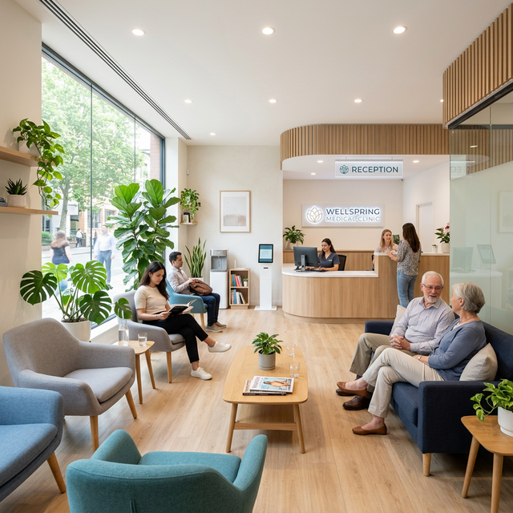

Team coordinato
Condivisione clinica quotidiana tra medici per piani terapeutici coerenti e supporto rapido in caso di urgenze ambulatoriali.
Medicina di gruppo a Mirano
Breve descrizione
Un modello organizzativo pensato per ridurre attese, aumentare continuita di cura e semplificare l'accesso ai servizi.
Condivisione clinica quotidiana tra medici per piani terapeutici coerenti e supporto rapido in caso di urgenze ambulatoriali.
Canali dedicati per appuntamenti, ricette ripetitive e certificati con procedure chiare e tempi di risposta definiti.
Follow-up personalizzati su patologie croniche, screening periodici e counselling su stili di vita e aderenza terapeutica.
Dalla visita clinica alla gestione continuativa, con attenzione a prevenzione e qualita della vita.
